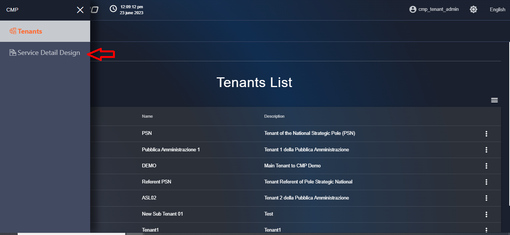
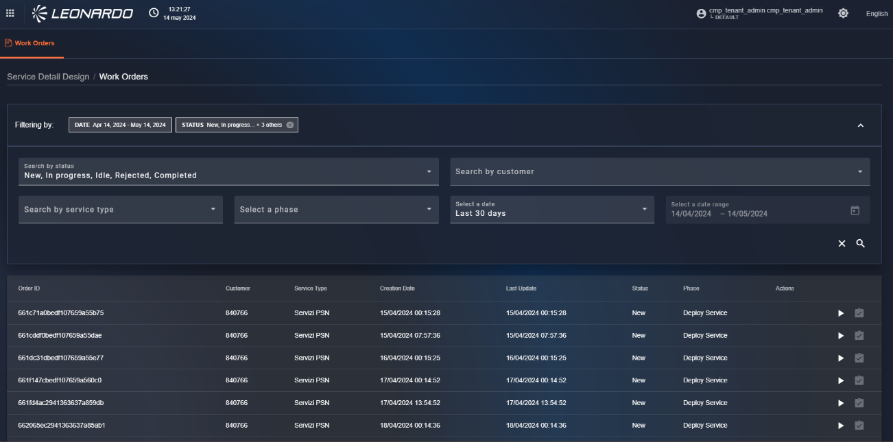
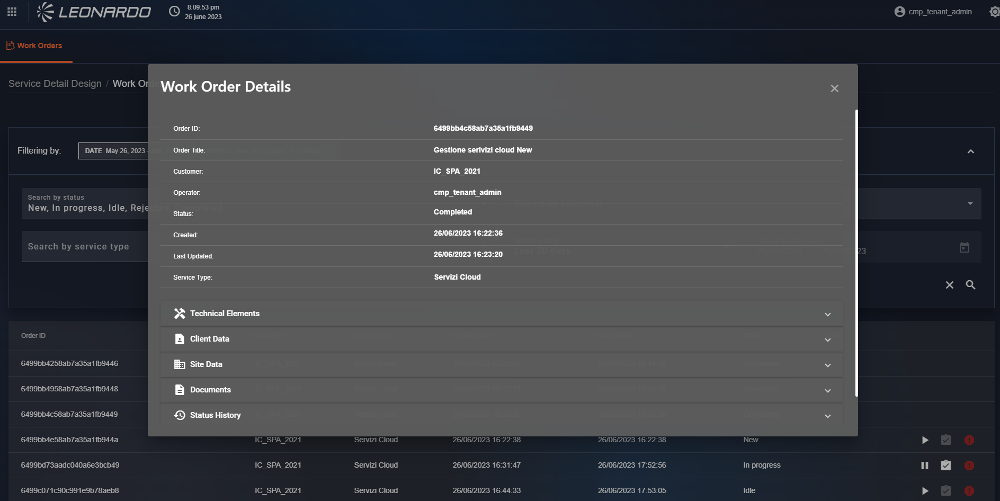
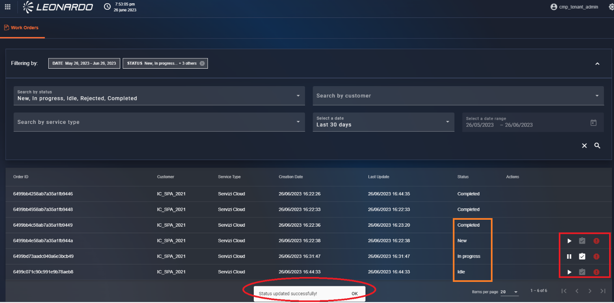
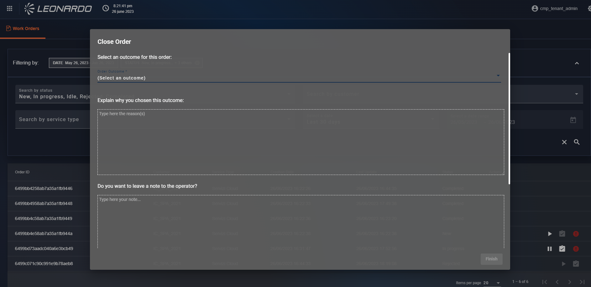
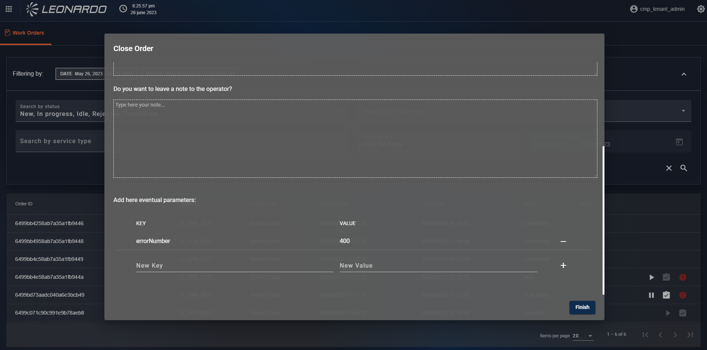
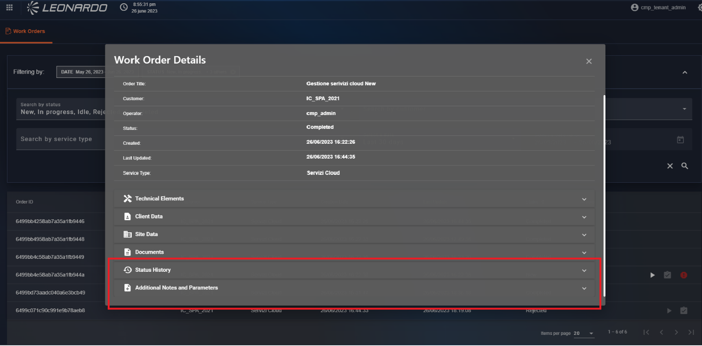

Service Detail Design
Il servizio service detali design è la soluzione implementata per la gestione delle richieste, che devono essere poi lavorate all’ interno del nostro ambiente da un utente abilitato.
Per accedere ai Service Detail Design accedere a SCMP con l’utente Gestore del servizio.
Dopo aver effettuato il login cliccare dal tasto bento il modulo “Service Detail Design”.

Figura 341 - Accesso a modulo Service Detail Design
Verrà mostrata la pagina di ricerca dove è possibile filtrare i work order già creati sulla base di:
-
Stato;
-
Customer;
-
Service Type;
-
Fase
-
Data di creazione.
La tabella mostrerà le informazioni generali dell’Ordine di Lavoro.

Figura 342 – Filtri della funzionalità Service Detail Design
Cliccare al centro della riga di un ordine di lavoro per visualizzarne il contenuto, verrà aperta una modale dove, all’ interno possiamo espandere le varie sezioni cliccando su di esse.
Per uscire dalla visualizzazione dei dettagli cliccare all’ esterno della finestra grigia.

Figura 343 - Dettagli dell'Ordine di Lavoro
Flusso dei Work Order
Per prendere in carico un ordine di lavoro cliccare, in corrispondenza di un ordine in stato “New” il simbolo “Play”.
Verrà visualizzata una notifica a schermo di cambio stato, e lo stato attuale dell’Ordine diventa “In progress”, i pulsanti del relativo ordine vengono modificati:
-
cliccando il tasto “Pause” l’ordine passerà nello stato “Idle”;
-
cliccando il tasto “Mark as completed” è possibile chiudere l’Ordine di Lavoro;
-
cliccando il tasto “Rejected” è possibile segnalare l’annullamento dell’Ordine;

Figura 344 - Pagina di gestione dei work order dei Service Detail Design
Quando viene cliccato il tasto “Mark as completed” viene visualizzata a schermo una finestra dove inserire le informazioni da allegare all’ ordine, in particolare:
-
il risultato della lavorazione.
-
una descrizione della scelta del risultato;
-
una nota per l’operatore.

Figura 345 - Chiusura di un Work order
Scorrendo in basso la pagina possiamo trovare la sezione dei parametri dove è possibile inserire diverse combinazioni chiave/valore dei parametri utilizzati durante la lavorazione.
Dopo aver inserito la chiave e il valore cliccare sul tasto “Più” per confermare l’inserimento, vengono aggiunti nuovi campi vuoti dove inserire ulteriori parametri. Per eliminare una coppia chiave/valore cliccare il tasto “Meno”, una volta inseriti tutti i parametri cliccare il tasto “Finish”.

Figura 346 - Inserimento parametri
Dopo aver completato l’ordine è possibile, aprendo i rispettivi menù, visualizzare all’ interno delle info tutte le informazioni inserite durante la lavorazione.

Figura 347 - Informazioni aggiunte durante la lavorazione